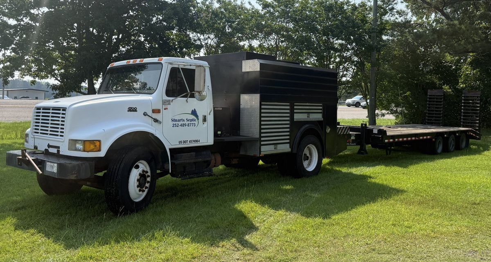

Stuarts Septic & Land is a family run septic and land contractor based in Coinjock, North Carolina, owned and operated by Tyler Stuart.
We started with one truck and a straightforward idea: answer the phone, show up when we say we will, and do septic work that does not need to be redone in three years.
Septic is not glamorous work. It is also the kind of work where cutting a corner shows up two winters later as sewage in somebody's yard. So we do not cut them. We pull the permits, we set the tanks level, and we build the field to the design.
Tyler holds a North Carolina Level 4 installer license, the top classification in the state, covering engineered and alternative systems. He also holds a Virginia Master Alternative installer license and Infiltrator product certification. We are fully insured for residential and commercial work.
Everything from full septic maintenance to installation, repair, rock and pipe systems, Infiltrator chamber systems and ditch maintenance runs through our own crew and our own equipment.
Excavators, dump trucks and pump equipment in house. That means we are not waiting on a rental yard to open before we can dig up your tank.

Call Tyler directly. Estimates are free and we will tell you straight whether you need a repair or a replacement.
Open for emergencies 24/7 ☎ Call (252) 489-8773